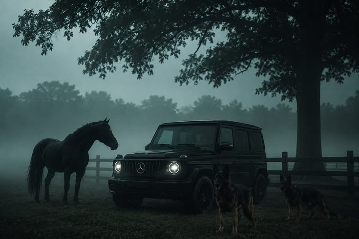

The Iconic G-Class
The Mercedes-Benz G-Class, sometimes called the G-Wagen, is a luxury off-road vehicle characterized by its boxy styling and body-on-frame construction. Originally developed as a military vehicle, it was later offered to civilians in 1979. Today, it stands as a symbol of ultimate status, combining rugged off-road capabilities with a premium, high-tech interior.

Key Dates in History
- 1972: Development of the G-Class begins.
- 1979: First civilian model is launched.
- 1990: The W463 generation introduces luxury features.
- 2018: A massive redesign improves driving dynamics.
Quick Facts
- "G-Wagen" is short for Geländewagen, meaning cross-country vehicle.
- It is one of the longest-produced vehicles in Daimler's history.
- Every G-Class is still hand-assembled in Graz, Austria.
- It features three fully locking differentials for extreme off-roading.
"The best or nothing."
- Gottlieb Daimler
Experience the G-Class
Watch the official presentation of the new model:
Read more on the official Mercedes-Benz website